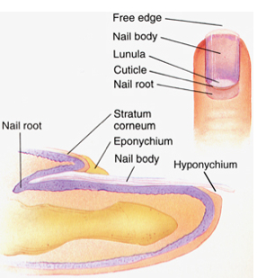

Ingrowing toe nail
What is an ingrowing toe nail
The
lateral nail plate pierces the lateral
nail fold and enters the dermis
Causes erythema,
granulation tissue and discomfort
What are the causes
• Often multifactorial
• Pressure on toe from shoe wearing
especially with tight toe
•
nail fold
pushed into the sharp edge of an
improperly cut nail, breaking the skin
•
Bacterial
/ fungal infection - abscess
• Inflammatory
process leading to granulation tissues
•
Granulation
tissues epithelializes preventing abscess drainage
•
Heredity factors:
genetically predisposed to inwardly curved nails
•
Underlying bony pathology causing deformation
of the nail
• Obesity causing deepening of
the nail groove
•
Antiviral therapy for
HIV: Indinavir has also been reported to have an
association with increased incidence of ingrown nails.
•
Prior trauma resulting
in an irregularly shaped nail
How is the severity of disease assessed
Divided
into
the following 3 stages:
(1) minimal pain, mild erythema and no
discharge, no granulation tissue
(2) crusting and expressible purulence
at the nail fold and nail plate junction; and
(3) chronic infection with protuberant
granulation tissue extending over the nail plate.
What is the treatment
Depends
on
stage of disease and patient factors
• stage 1
- Mild disease. No granulation tissue no pus
• Proper
trimming of the nail at right angles to the distal edge of the
nail plate
• the goal
being a squared nail with corners protruding
distal to the hyponychium
• Wear shoes
with a wide toe box or open shoes
• Stage 2 - For disease
with purulence but no granulation tissue
•
A cotton wedge is placed underneath the nail plate to separate
it from the lateral nail fold to relieve the pressure and
allow abscess drainage.
•
For gross severe sepsis, avulsion of nail under LA allows
drainage of abscess and resolution of acute inflammation
•
TDS soaking of foot in warm water.
•
Culture pus and treat with Abx
•
Once swelling decreases, treat as for Stage 1
Stage 3 - chronic infection with protuberant granulation
tissue extending over the nail plate.
Surgical
treatment is generally preferred
What are the
surgical options
•
Total
ablation of the nail – Zadic’s operation. More suitable for
older patient with ingrowing toe nails on medial and lateral
sides of toe. Older patient where cosmesis is less important.
•
Wedge
Excision of Nail and matrix +/- phenol ablation. More suitable for
younger patient where cosmesis is important.
• Must exclude peripheral vascular disease
by palpating pulses and using ABPI if suspicious.
What is the important anatomy of the nail

i) nail root (germinal matrix): stratum basale and spinosum of epidermis are
present here forming nail matrix cells which synthesize the
nail plate
ii) nail bed (sterile matrix): stratum
spinosum of nail, does not contribute to nail
synthesis
iii) nail plate (body): closely
compacted, keratin enriched with
hard interfibrillar material, it
is the stratum corneum of the nail
iv) eponychium (cuticle): junction
between skin stratum corneum and base of nail plate
v) hyponychium: junction between
the skin stratum corneum and the tip of the nail plate
vi) lunula: light or white region
at the base (eponychium) of nail plate
vi) Paronychium – lateral nail
fold
Nail Growth
i) keratinocytes in the
nail bed (matrix cells) proliferate, grow, synthesize hard
keratin, dye, and form the matrix of the nail
ii) lunula is thought to represent immature hard keratin of the
developing nail and is an indicator of nail growth
iii) growth is usually fastest in the longest digit
How do you perform wedge excision of the toe nail
• In an appropriately consented and prepared
patient.
• The side of the procedure and side of nail is
marked in anesthetic bay.
• GA for children. LA for co-operative adults
• Prepare the
entire foot with Betadine. Free drape the foot to ankle.
• I perform a digital block with 2% lignocaine without
adrenaline for local anaesthetic procedures and 0.5 Marcaine for
GA. The LA is infiltrates 3-4ml on each side of first digital
web space. I also infiltrate some LA
across the dorsum of toe.
• I use penrose drain
as a tourniquet wrapped twice around the proximal phalanx and
secured with a haemostat for avascular field.
• I sit at the foot of the bed and ask my assistant
to flex the digit.
• I make an incision through the nail plate from
the eponichium distally to hyponichium. The incision removes ¼
to 1/5 of the width of nail.
• I make a second incision to encompass any
granulation tissue outside of the paronychium taking care to not
divide the digital nerves laterally.
• Both
incisions are carried down to the bone of distal phalynx
• I use a haemostat to gently remove the nail plate
of the wedge
• I
make radial incision extending from the junction of eponychium
and paronychium.
• I
ask my assistant to elevate the skin either side of this
incision to expose the proximal extent of the germinal matrix.
• I incise and excise this white germinal matrix
down to the bone as far as the interphalangeal joint taking care
not to transgress the joint capsule.
• I then remove the wedge of lateral nail tissue
• I
ensure that all germinal matrix laterally and proximally is seen
and removed.
• I
use a curette to scrape any remaining tissue from the bone.
•
I close the skin onto the remaining nail using steristrips (not
circumferential) distally
•
I close the skin of the proximal incision with 2/0 Nylon
•
I apply paraffin gauze, telfor and ¼ inch ribbon bandage to toe
ensuring that the distal tip of the phalynx is visible.
•
I remove the tourniquet and apply direct digital compression for
3 mintes.
•
I inspect the tip of the toe to ensure that it remains pink with
brisk capillary refill

What
are your post operative instructions
•
Leave dressings intact for 48 hours shower with bag on foot.
•
Keep foot elevated when not walking
•
Review in 48 hours and remove dressings and inspect wound
•
Wear open toed shoes thereafter
•
Remove sutures at 10 days.
What
are the important complications
} Early
§ Ischaemia
of toe – ensure tourniquet is removed
§ Bleeding
– apply direct pressure. If soaks dressings take back to
operating room for exploration
§ Infection
– Treat with broad spectrum antibiotics. Open wound to drain
sepsis. Regular bathing
} Late
§ Recurrence
of nail spicule
§ Recurrence
of ingrown toe nail
How
do you perform Zadic’s operation
• In an appropriately consented and prepared
patient.
• The side of the procedure is marked in anesthetic
bay.
• GA for children. LA for co-operative adults
• Prepare the
entire foot with Betadine. Free drape the foot to ankle.
• I pperform a digital block with 2% lignocaine without
adrenaline for local anaesthetic procedures and 0.5 Marcaine for
GA. The LA is infiltrates 3-4ml on each side of first digital
web space. I also infiltrate some LA
across the dorsum of toe.
• I use penrose drain
as a tourniquet wrapped twice around the proximal phalanx and
secured with a haemostat for avascular field.
• I sit at the foot of the bed and ask my assistant
to flex the digit.
• Using a haemstat and a Macdonald dissector I
elevate the nail plate from the nail bed and avulse the nail.
•
I make an H-shaped incision parallel to the eponychium and extending distally
and proximally at the margins at right angles to emcompass the
area of germinal matrix.
•
I incise just distal to the Lanula to remove the germinal matrix
distally
•
I use skin hooks to elevate the skin flaps to expose the
germinal matrix proximally and I excise the germinal matrix down
to the periosteum including as far proximally as IPJ exposing
the extensor pollicis tendon.
•
I remove the wedge of germinal matrix and I curette away any
remaining tissue.
•
I close the skin flaps using two loose 3/0 nylon sutures.
•
Dressing as for wedge excsion